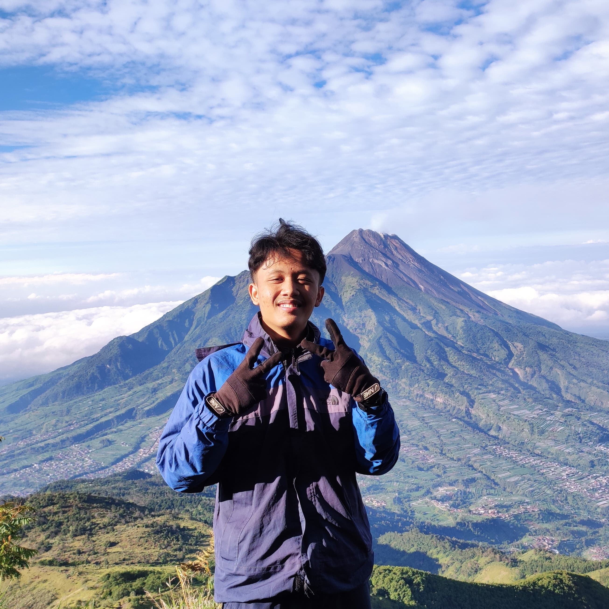

Farhan Ardiyanto

Summary
Dedicated Electronics and Instrumentation student from Universitas Gadjah Mada. Has a great interest in the digital world, especially in the field of electronics and programming. Also has an interest in research around IOT system and web developer. Motivated to try new things, and aware of the importance of cooperation and mutual trust between team members to achieve the desired goals.
Education
-
Gadjah Mada University
Bechelor in Electronnics and Instrumentation
-
The City School
Yogyakarta
Work Experience
-
Hexa Daya Solusi (HDS) - Automation Engineer
(Oct 2023 - Mar 2023)
- Responsible for developing Remote Control Monitoring System (RCMS) to be applied in airport electrical sub-station.
- Responsible for developing and installing Building Monitoring System (BMS) to be applied in data center building.
- Assisting in the design, creation of test script, and providing technical support with other technical teams.
-
National Research and Innovation Agency (BRIN) - Software Engineer
(May 2023 - Aug 2023)
- Manage with team the early warning system monitoring project work as a preventive action research for natural disasters, such as landslide and flooding.
- Responsible for developing server-side application and managing databases for monitoring as backend developer.
-
Ministry of Communication and Informatics (DISKOMINFO) - Software Engineer
(Aug 2022 - Feb 2023)
- Responsible for learn and know the applied software engineering system and network infrastructure in government work areas.
- Responsible for developing server room security system and monitoring through web server.
Organizational and Volunteer Experences
-
Gadjah Mada Flying Object Research Centre (GAMAFORCE) - Electrical Engineer
(Nov 2021 - Sept 2023)
- Responsible for doing electrical engineering process to create a Flying Object such as drone, and Ground Control Station Hardware.
- Provide innovations to be developed and submitted to national competitions.
- Make a design for the Printed Circuit Board and maintained the electronics stuff and the treatment.
-
Elins Research Club (ERC) - Electrical Engineer
(Mar 2022 - Jun 2023)
- Learn and know about software engineering, hardware engineering, electrical engineering to be applied for research.
- Responsible for deliver improvement to create inovation on electrical and hardware parts for Aeroplane robot (Drone).
-
Electronics and Instrumentation Students Assosiation (HMEI) - Internal Department
(Aug 2021 - May 2023)
- Manage the internal audits of organization operations, processes, and functions to evaluate the adequacy and effectiveness of internal controls.
- Initiate the internal mentoring event details for skill improvement of the team as sustainability of organization
Skills
Soft Skills
- Communication
- Team Collaboration
Hard Sill
- Programming
- HTML
- CSS
- Python
- SQL
- Javascript
- PCB design
- Graphic Design
- Affinity Designer
- Davinci Resolve
Honor And Award
- 1st Place Indonesia Flying Robot Contest (KRTI) in Technology Development division, Lampung
- Certification of Research - Ministry of Law and Human Rights
Get to Know More About Me
Contact Me